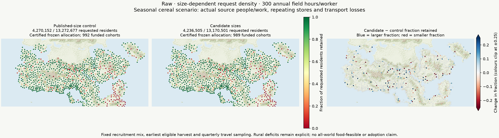
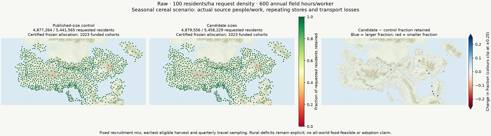
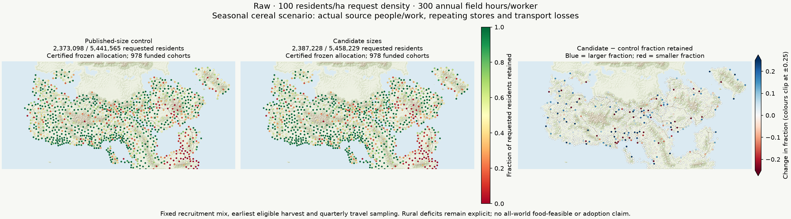
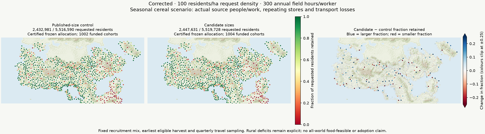

The same fixed towns, original finite people and crop/work inputs, now tested with harvest timing, repeating stores and paid transport loss. Candidate and control use the same assumptions.
A certified frozen allocation passes fresh physical food/work/population checks. It is distinct from numerical fixed-point convergence and from maximum sustainable population. Density readings define the original resident requests; these reduced occupancies do not refit or certify the town footprints. Unsupported rural origins remain visible and do not export their meals. This is a partial cereal scenario; no atlas adoption or complete diet/labour claim.
| 600-hour scenario | Control residents | Candidate residents | Funded 100-person cohorts | Physical certificate, control/candidate |
|---|---|---|---|---|
| raw / central | 9,405,630 | 9,337,899 | 1023 → 1023 | True / True |
| raw / low | 4,877,264 | 4,879,556 | 1023 → 1023 | True / True |
| corrected / central | 10,056,808 | 10,065,607 | 1042 → 1042 | True / True |
| corrected / low | 5,072,973 | 5,095,909 | 1042 → 1042 | True / True |
Every town/scenario CSV · Scenario totals · Independent review · Fresh-point replay



